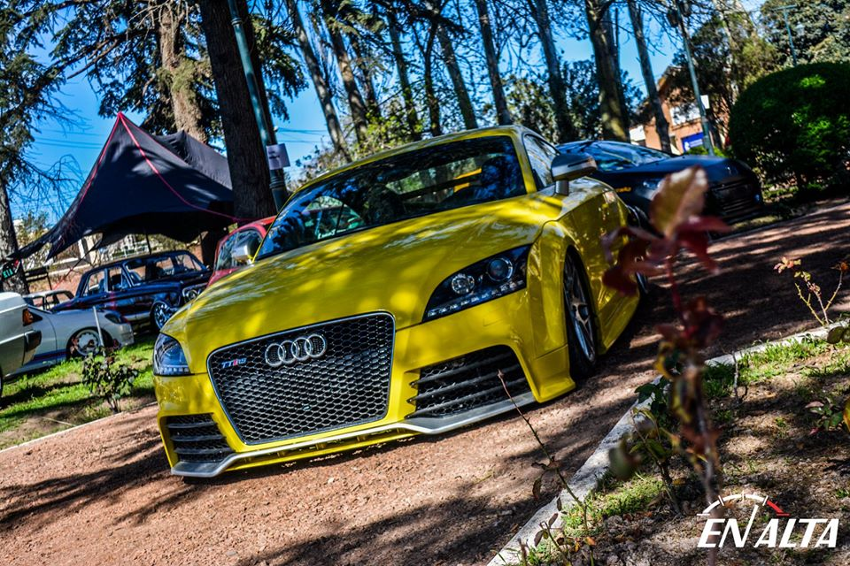

En alta es una revista automotriz de la provincia de Mendoza, la cual se encarga aportar información sobre distintos vehículos además de cubrir casi en su totalidad los eventos de Mendoza y de otras provincias. Cubrimos eventos como exposiciones de autos, picadas.
El pasado Jueves 9 de Mayo se llevó a cabo en las chanchas de supermercado de Dorrego una de las meet de Low Dapper con entrada libre y gratuito, la cual es una aproximación una juntada solidaria.
El IKA Torino (luego llamado Renault Torino) es un automóvil de turismo producido por el fabricante argentino de automotores Industrias Kaiser Argentina entre los años 1966 y 1975, y por Renault Argentina S.A. (la filial argentina del Groupe Renault) entre 1975 y 1981. Era un automóvil compacto del segmento E, y si bien su diseño estaba basado en el modelo americano Rambler American, fue rediseñado y desarrollado íntegramente en Argentina. El «Torino» fue presentado en dos versiones de carrocerías: un sedán de cuatro puertas, y una cupé sin parantes de altas prestaciones. Venía equipado con un motor naftero de 6 cilindros en línea, acoplado a una caja de cambios de 4 velocidades. Su motorización presentaba como variantes el motor «Tornado Interceptor» OHC 181 de 2965 cc, un motor «Tornado Interceptor» OHC 230 de 3770 cc (ambos de 4 bancadas) y una versión desarrollada en Argentina denominada «Torino 233» de 3770 cc y 7 bancadas.
ir a inicio